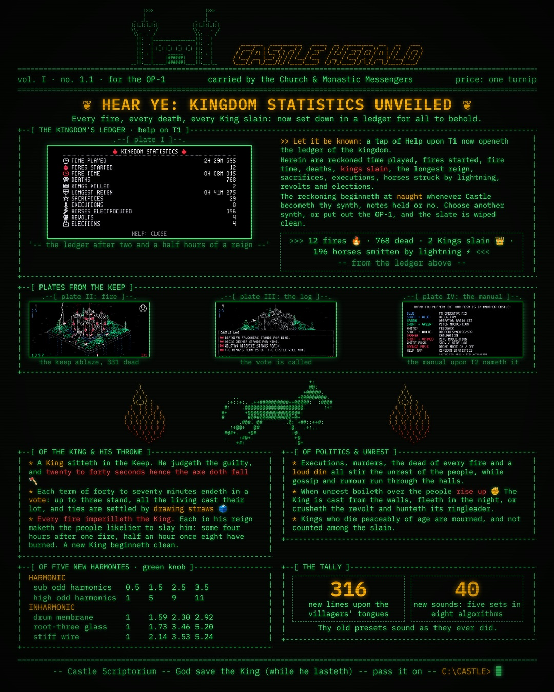
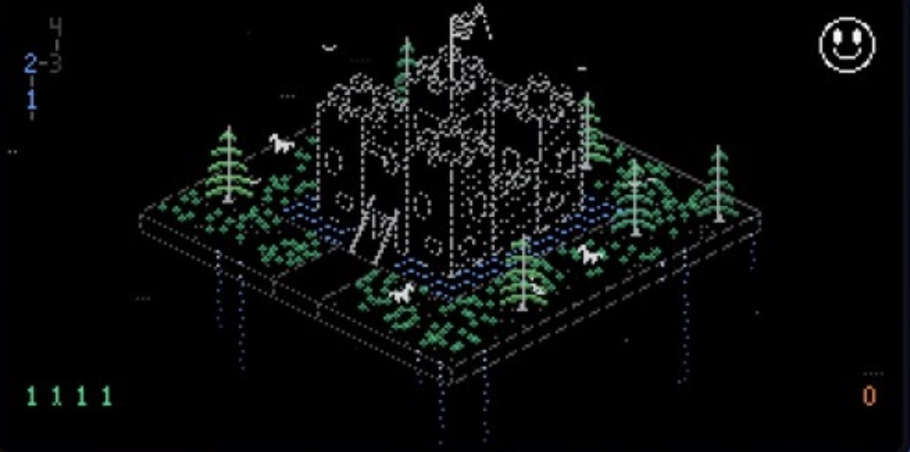
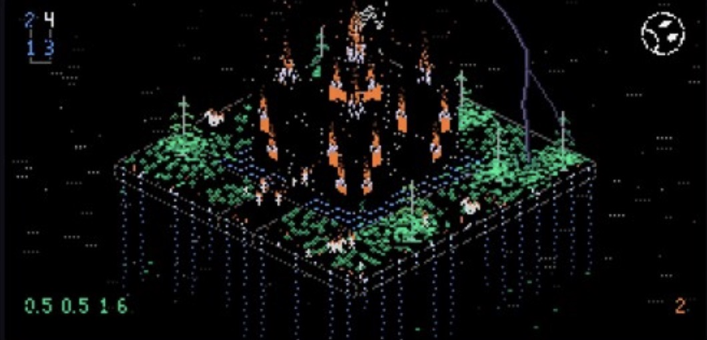
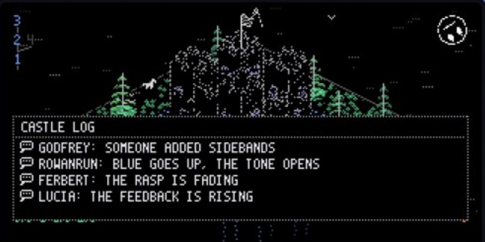
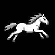

~ displayname808’s corner of the web ~

Castle
A microcosm on your OP-1 where exploration has consequences.
EXCLUSIVE TO OPUS ↗ · Original OP-1
Forecast from inside the synth:
low clouds, high feedback, occasional gravity.

Welcome to Castle, a small and strange world running on your OP-1. It is a synthesizer you can play and a castle you can explore, where every turn of a knob is heard and seen, and somebody inside always has an opinion about it.
Castle 1.1 · Original OP-1 firmware 246 · OPUS core 2.31+
8 algorithms · 25 ratio sets · 1,822 dialogue lines and 30,000+ audibly different timbres.
★ Castle 1.1 is out — news from the kingdom

Kingdom Statistics. Tap Help on T1 to see time played, fires started, fire time, deaths, kings killed, longest reign, sacrifices, executions, horses electrocuted, revolts and elections. The ledger starts from zero each time you switch to Castle.
A king and politics. The king sentences villagers to execution. Elections happen every 40–70 minutes; ties are settled by drawing straws. Each fire during a reign makes the people more likely to turn on their king. Executions, fires and loud noise raise unrest, which can boil over into a revolt.
Five new ratio sets. Green adds sub odd and high odd harmonics, drum membrane, root-three glass and stiff wire. Across eight algorithms, that’s 40 new sound combinations. Existing presets retain their previous ratio selection and sound.
More life in the log. 316 new dialogue lines and six new jobs for the villagers. Knob remarks are less repetitive.
Castle 1.1 requires OPUS core 2.31 or newer.
Screenshots from the OP-1



Click a screenshot to view it at full size.
Castle trailer
Controls & sound guide
Four-operator FM, a sine sub an octave below, saturation, noise with drop-outs, ring modulation and sample-rate reduction.
| Knob | Turn | Shift + turn |
|---|---|---|
| Blue | FM: fade operators 2, 3 and 4 into operator 1 | Eight algorithms |
| Green | 25 operator ratio sets (20 in presets made before 1.1) | Pitch modulation, up to 4 Hz / one semitone |
| White | Operator 4 feedback | Noise / mild sample-rate reduction |
| Orange | Saturation (and fire) | Ring modulation / kaleidoscope moat |
Tap Help (FN) on T1: show / hide Kingdom Statistics.
White push: show / hide the log. Orange push: drone mode on / off. With drone mode off, notes fade for three seconds after release.
Castle shapes its own level; ADSR and velocity do not affect it. T2 lists controls. T4 LFOs can animate the main knobs, algorithm, ring modulator and reducer.
How to install OPUS & Castle
First, OPUS:
- Visit the official OPUS website and download OPUS.
- Back up your OP-1 and follow the current installation guide there.
- Check that OPUS core is 2.31 or newer. Castle is for the original OP-1, firmware 246.
Then, Castle:
- Use “Get Castle” above to download
castle.opmod. - Enter Disk Mode. Copy the file into the OP-1’s
modsfolder. - Eject safely and restart. Check Castle says “loaded” in the mods list.
- Select Castle as your synth engine and play a key.
All names and dialogue are built in. No extra text files are needed.

Get in touch
For bugs: include your Castle / OPUS versions and what happened.